Удаление зубов
Удаление зубов мудрости и сложное удаление с бережным подходом и подробными рекомендациями на период восстановления.
Записаться на эту услугу →Челюстно-лицевой хирург · к.м.н.
Понятный план лечения, сроки и стоимость уже на первой консультации. Лично веду пациента от диагностики до полного восстановления.
Нажмите, и откроется диалог с врачом. Приложение Telegram должно быть на телефоне или компьютере.

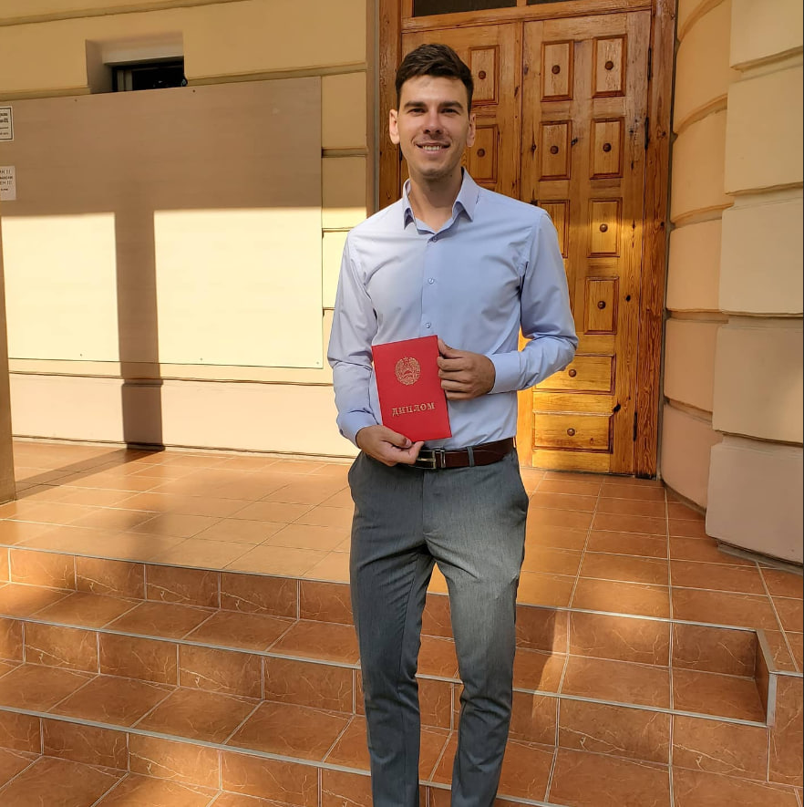
О специалисте
Меня зовут Дмитрий Иванович. Я челюстно-лицевой хирург с многолетним опытом операций разной сложности. Считаю, что пациент должен понимать, что с ним будет происходить, поэтому на консультации подробно показываю снимки, объясняю варианты лечения и честно говорю о рисках.
Работаю в тесном контакте с ортодонтами, стоматологами-имплантологами и анестезиологами, чтобы лечение было последовательным и безопасным.
«Хорошая операция начинается с разговора: пациент должен уйти с консультации спокойным и с понятным планом».
План, сроки и стоимость обсуждаем до начала лечения.
Выбираю наименее травматичный способ, который решает задачу.
После операции можно написать врачу в Telegram с вопросом.
Время на консультацию достаточно, чтобы задать все вопросы.
Образование и квалификация
2005–2011
Лечебный факультет, диплом врача.
2011–2013
Челюстно-лицевая хирургия.
Ежегодно
Курсы и стажировки в профильных клиниках.
Действует
Высшая квалификационная категория.
Нажмите на документ, чтобы открыть его на весь экран.
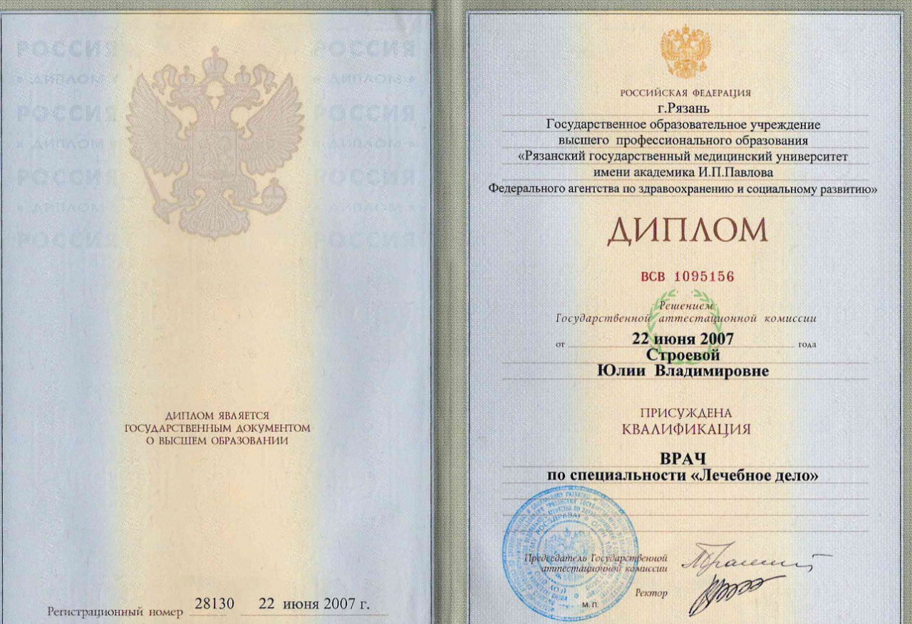
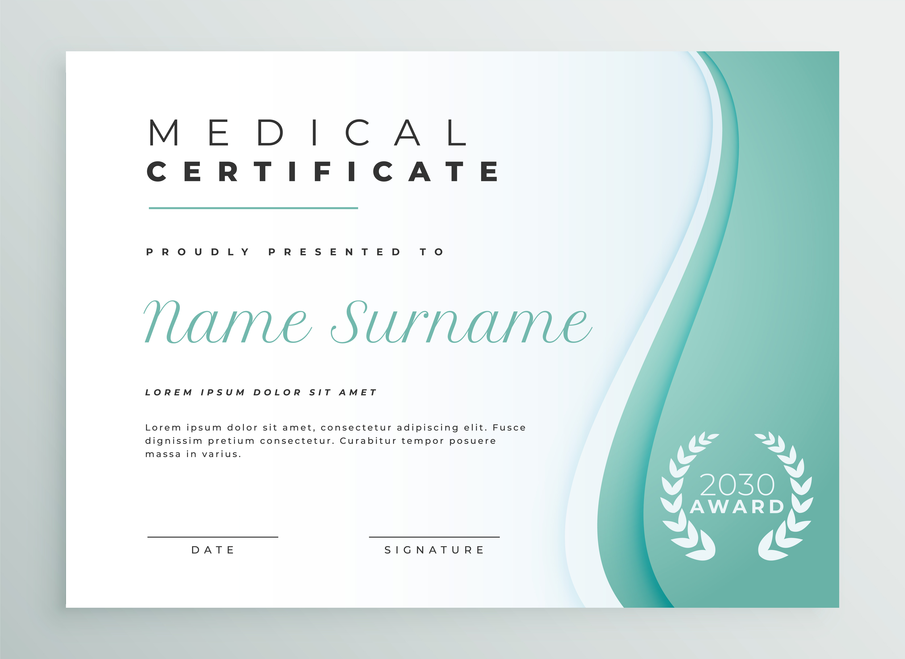
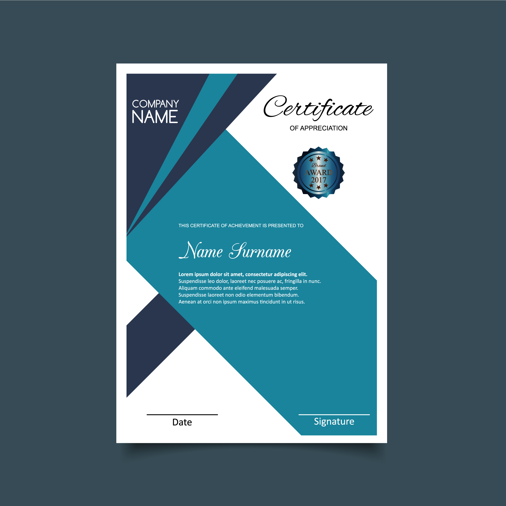
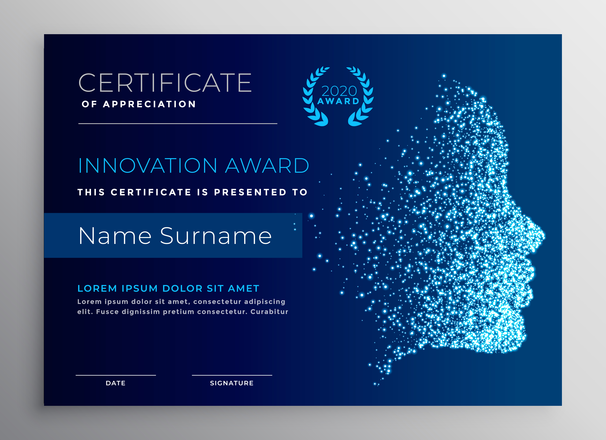
Услуги и направления
Удаление зубов мудрости и сложное удаление с бережным подходом и подробными рекомендациями на период восстановления.
Записаться на эту услугу →Хирургический этап: подготовка костной ткани и установка имплантов по согласованному плану с ортопедом.
Записаться на эту услугу →Ортогнатическая хирургия: операции на челюстях при выраженных нарушениях прикуса, совместно с ортодонтом.
Записаться на эту услугу →Диагностика и удаление доброкачественных образований челюстей и мягких тканей лица.
Записаться на эту услугу →Лечение переломов челюстей и костей лица, помощь после травм и реабилитация.
Записаться на эту услугу →Консультация и лечение при болях и щелчках в суставе, воспалениях и камнях слюнных желез.
Записаться на эту услугу →Примеры работ
Двигайте ползунок, чтобы сравнить. Фото публикуются с согласия пациентов.
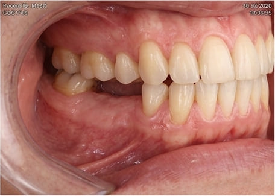
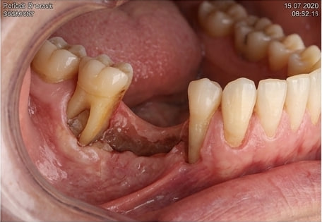
Описание случая и срок лечения
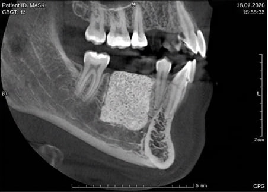
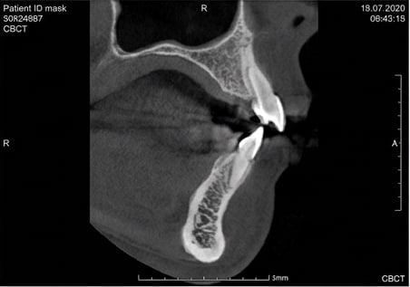
Описание случая и срок лечения
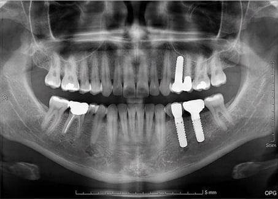
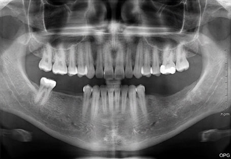
Описание случая и срок лечения
Отзывы пациентов
«Текст отзыва пациента. Расскажите, что понравилось: как врач объяснял план лечения, как прошло восстановление.»
«Текст отзыва пациента. Можно добавить благодарность за внимание, понятные ответы на вопросы и быструю связь.»
«Текст отзыва пациента. Подойдут отзывы с конкретикой: с чем обращались и какой результат получили.»
Запись на прием
Сообщение, которое откроется в Telegram
Записаться в TelegramМы не собираем данные на сайте: сообщение отправляете вы сами в мессенджере.
Частые вопросы